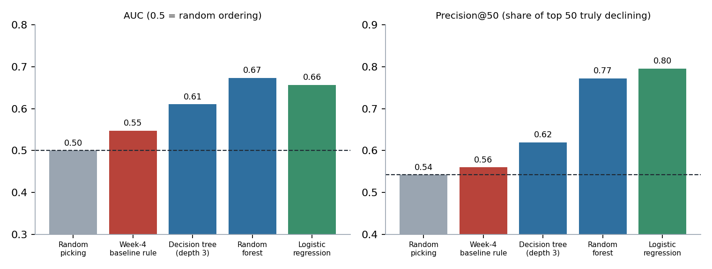
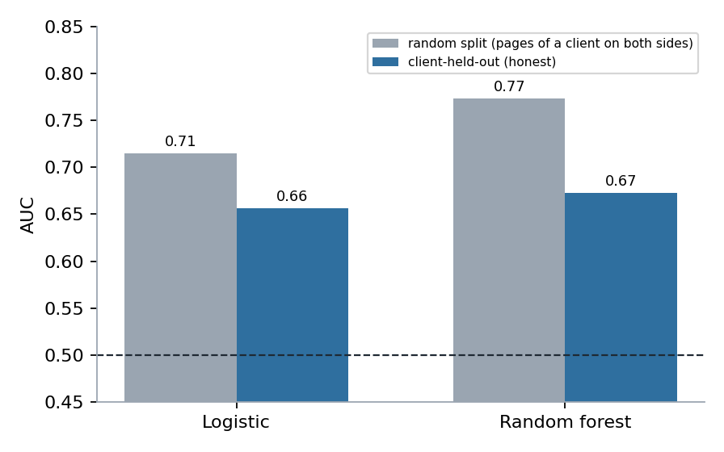
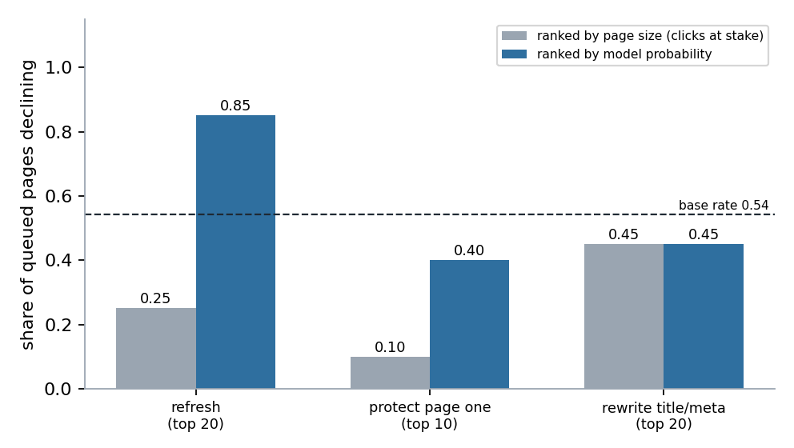
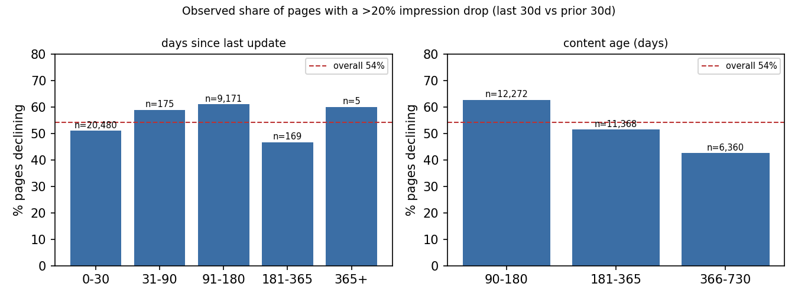

Which pages should a content team review first?
Abstract
Question. A content team can review only a few dozen pages per sprint, so which pages should come first? Data and method. Using a 30,000-page snapshot of pseudonymised search and analytics data from the FlyRank ML Internship release (and a one-month check of the 79M-row warehouse), I compared a hand-written CTR rule against logistic regression, a shallow tree and a random forest, validated on clients the models had never seen. Result. The rule was close to random for predicting decline (AUC 0.55), while client-held-out models reached AUC 0.66–0.67 and precision@50 of about 0.80 against a 0.54 base rate. Caveat. A random split would have overstated skill by 0.06–0.10 AUC, and the signal is modest, so I treat the output as a review queue, not a forecast. Use. The result is a ranked, human-reviewed playbook with reason codes, monitoring triggers and an explicit list of what must not be automated.
1. Introduction
Picture a content lead on Monday morning with 3,000 published pages and time to look at fifty. Opening pages at random wastes the week; an obvious rule such as "low CTR for its position" feels sensible. This note asks a narrow question: does a learned score pick better pages than that rule, and how much of its apparent skill survives an honest test?
The outcome I score is whether a page is declining: its impressions in the last 30 days fell by more than 20% compared with the 30 days before. Everything below is decision-support. It orders human attention; it does not say why a page moved, and it does not show that any action would reverse a decline.
2. Data
Modelling snapshot. The main experiments use a 30,000-page slice (one row per page, 44 columns, 32 pseudonymised clients) covering a trailing 90-day window. About 54% of pages are labelled declining.
Warehouse check. The same release also ships a daily warehouse of about 79 million rows (build v20260703, January 2025 to June 2026). I did not scan all of it. I verified the data contract on one mid-panel month, March 2026, with three queries:
Check on month=2026-03 | Result |
|---|---|
| Grain: duplicate (date, client, page) rows | 0 of 9,841,378 |
| Span and coverage | 31 days · 55 clients · 331,437 pages |
Rows passing gsc_data_available IS TRUE | 36.7% |
Rows passing ga4_data_available IS TRUE | 4.2% |
Because analytics coverage is that thin, I used search-console signals only. The final month (June 2026) is the natural outcome window of any past-to-future label, so I left it sealed and never queried it.
Excluded, and why. Identifiers (used only to group folds); the model and provider that wrote each page (not a user-value signal); and every column derived from the label, namely the trend fields and the 30-day windows.
3. Methodology
Label and baseline
Label: declining = 1 when the 30-day impression change is below −20%. The baseline is a transparent rule: impressions × (typical CTR for the page's position band − the page's CTR), for pages in positions 1–20 with at least 1,000 impressions. Before building it I checked two signals. CTR falls steadily as position worsens (confirmed). Staleness matches decline only loosely (mixed), so I did not build the rule on it.
Models and validation
Logistic regression, a depth-3 decision tree and a random forest, with missing values flagged rather than blindly zero-filled. Folds are grouped by client (five folds, seed 42), so every client sits wholly in training or wholly in test. All scores are out-of-fold; the baseline's CTR norm is re-fitted on training folds only.
Leakage checks
- Deliberate leak: adding the label's own source column pushed AUC to 0.998 on the snapshot and 0.999 on a warehouse month, so the test harness does detect leakage. Honest figures are kept.
- Split check: the same models scored under a random split versus the client-held-out split (Figure 2).
- Timeline check: 90-day columns contain the label's 30-day windows. I re-ran with a strict-timeline set (static metadata plus the earliest 30 days of volume).
4. Results

| Method (client-held-out) | AUC | P@20 | P@50 | P@200 |
|---|---|---|---|---|
| Random picking (base rate) | 0.50 | 0.54 | 0.54 | 0.54 |
| Week-4 CTR rule (baseline) | 0.55 | 0.53 | 0.56 | 0.59 |
| Decision tree, depth 3 | 0.61 | 0.61 | 0.62 | 0.62 |
| Random forest | 0.67 | 0.77 | 0.77 | 0.76 |
| Logistic regression | 0.66 | 0.76 | 0.80 | 0.78 |
The forest and logistic regression perform alike, so I prefer logistic regression for its simplicity. The strongest inputs were average position and page age, possibly partly a measurement-coverage effect (the depth-3 tree routes pages with no position data to "not declining"), so I read them as directional, not causal.

Under the strict-timeline feature set, logistic regression stayed about the same (AUC 0.665) and the forest dropped to 0.62. Fold-to-fold spread is 0.03–0.07 AUC, so differences smaller than about 0.03 should not be read as real.
A separate warehouse experiment (one month, 90,593 pages, will daily impressions grow by more than 20% in the second half of March?) gave an honest AUC of 0.617 against 0.999 with a deliberate leak. It is a leakage demonstration on a different target, not a second validation of the main model.
A negative result that shaped the playbook


5. Limitations & honest framing
- One snapshot, no time test. A single 90-day window, active pages only (at least one impression, age at least 90 days), 32 clients. I did not run a time-ordered split, so I cannot claim the ranking holds next month.
- Modest signal. AUC of about 0.66 is directional. Precision@K moves several points between folds because fold base rates range from 0.38 to 0.65.
- Window overlap. Rule inputs such as position and CTR are 90-day figures that contain the label's window.
- Mean reversion. Tiny-volume pages swing in percentage terms, so some "declines" are noise.
- Clicks at stake is an estimate built from stated assumptions (a decline is at least 20%), not a forecast of revenue. The 15-minutes-per-page review cost is an assumption.
- Observational. Nothing here shows that refreshing a page causes recovery.
- Analytics coverage in the warehouse month is thin (4.2% of rows), so engagement signals are not in the model.
6. Ranked recommendations
These come from the action playbook: each page gets one action and one reason code, and a sprint queue of 50 pages is split 20 / 20 / 10 across the three actions.
- Refresh
refresh_contentstale_and_likely_declining — pages with model probability of decline at or above 0.60 and 90+ days since the last update. Rank by probability. Review the page and its queries before spending time. - Rewrite title and meta
rewrite_title_metactr_below_position_norm — pages in positions 1–20 with a CTR below the norm for their position band. Rank by estimated missed clicks. Check for search-result features before editing. - Protect page one
protect_page_onepage_one_at_risk — human review only. The slot is small and was below the base rate in the check. - Monitor / no action — young pages (wait a cycle) and pages with fewer than 200 impressions.
Light monitoring. Re-check monthly: precision@50 minus base rate (alert below +0.10 twice in a row), the share of pages with no position data (±5 points), the overall decline rate (±10 points), the share of reviewer rejections (above 50%), and any share of unseen clients above 20%. Retrain monthly or after any change to how trend or position is computed.
7. Reproducibility
Everything is in the repository: github.com/Hamzaviour/flyrank-ml-internship. Seeds are fixed at 42; each number on this page traces to a committed metrics file in work/outputs/.
- Data contract, warehouse checks and leakage demo
- Signal checks and baseline rule
- Model vs baseline
- Validation and claim audit
- Action playbook
- Capstone notebook (regenerates every chart here)
The warehouse is gated on Hugging Face (request access, then use a read token as a notebook secret). The queue CSV is regenerated by the notebooks and is deliberately not committed.
8. Acknowledgments & data credit
Built on the FlyRank ML Internship dataset — flyrank.ai. Thanks to the FlyRank team for the pseudonymised release and the internship curriculum. All client and page identifiers in the source data are pseudonymised, and none appear here.
This is a student research project. It is observational, uses a limited snapshot, and is not an official FlyRank publication or a product recommendation.